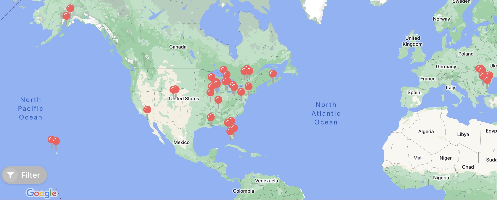

Hobbies
I have many activities I am excited about that are outside of the academics, sports, or music. For example, I love to play chess and travel. In the winter I love to ski -- my favorite slopes are in Keystone Colorado. In the summer, I enjoy spending time on Lake Michigan. Finally, I really enjoy listening to music, watching movies, and catching soccer games (both in person and on TV) to see my favorite player and the greatest of all time soccer superstar, Lionel Messi.
Chess
Chess is my favorite game to play in my downtime.
Travel
I love to travel, and have visited 16 states (IL, MI, AK, FL, CO, HI, TN, LA, NY, PA, CA, IN, MO, DC, WI, OH) and 4 countries (US, Canada, Romania, Bulgaria) around the world. My hope is to someday visit all 50 states around the country, and travel in Western Europe to catch some soccer matches as well as to see some amazing history.
